Design a Proximity Service
"Mere 500m ke andar kaunse restaurants hain?" — Yelp / Google Maps jaisa proximity service. 2D search kyun slow hai, aur Geohash, Quadtree, Google S2 kaise 2D ko 1D mein badal ke ise fast banate hain.
Introduction
Proximity service nazdeek ki jagah dhoondhta hai — restaurants, hotels, theaters, museums, petrol pumps. Yelp pe "nearby restaurants" ya Google Maps pe "k-nearest gas stations" — sab isi ke upar chalte hain. Ye service location-based apps ka ek core building block hai, aur Chapter 17 (Nearby Friends) aur Chapter 18 (Google Maps) mein bhi iske concepts (khaas kar geohash) wapas aayenge.
Step 1: Problem aur scope
Functional requirements
- User ki location (latitude, longitude) aur radius se businesses search.
- Business owners business add/update/delete kar sakein — ye real-time reflect hona zaroori nahi (agle din tak chalega).
- Customers business ki detailed info dekh sakein.
Non-functional requirements
- Low latency: nearby search fast ho.
- Data privacy: location sensitive data hai — GDPR (EU) aur CCPA (California) jaise laws comply karne hain.
- High availability + scalability: dense areas mein peak hours ke spikes handle.
Back-of-the-envelope
- 100M DAU, 200M businesses.
- Har user roz 5 searches.
- Search QPS = 100M × 5 / 105 (≈86,400) ≈ ~5,000 QPS.
Step 2: High-level design
API design
GET /v1/search/nearby
latitude (decimal) - user ki latitude
longitude (decimal) - user ki longitude
radius (int, optional) - default 5000 meter
Response:
{
"total": 10,
"businesses": [{business object}]
}Search result mein sirf zaroori fields (naam, distance, rating thumbnail) — poori detail tab jab user click kare (business detail API se). Pagination bhi chahiye, lekin simplicity ke liye skip.
| API | Detail |
|---|---|
GET /v1/businesses/{id} | Business ki detailed info |
POST /v1/businesses | Naya business add |
PUT /v1/businesses/{id} | Business update |
DELETE /v1/businesses/{id} | Business delete |
Data model
Read volume high hai — do features bahut common hain: (1) nearby search, (2) business detail. Write volume low. Read-heavy workload ke liye MySQL jaisa relational DB theek fit hai. Do key tables: business table (detailed info, primary key business_id) aur geospatial index table (spatial operations ke liye — aage detail).
High-level architecture
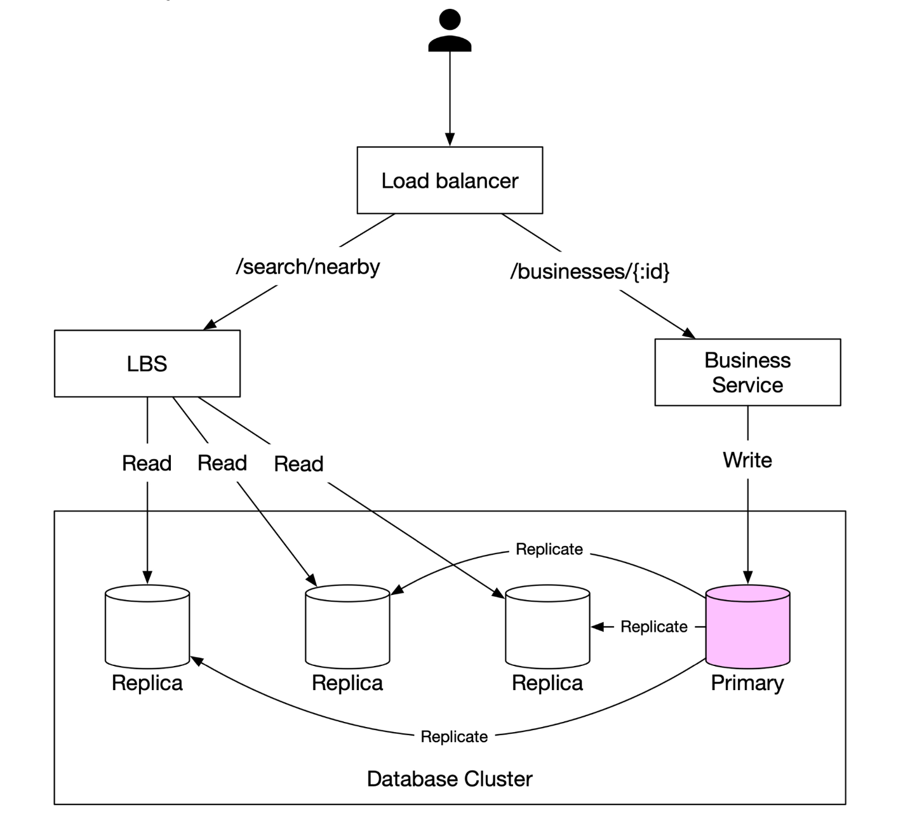
/search/nearby → LBS (Location-Based Service), /businesses/{:id} → Business Service. Neeche Database Cluster: Business Service Write karta hai pink Primary DB pe; Primary teen Replica DBs ko "Replicate" karta hai; LBS teeno replicas se Read karta hai.- Load balancer: URL path pe route.
- LBS: system ka core — radius + location se nearby businesses. Read-heavy, no writes, high QPS (khaas kar peak hours, dense areas), aur stateless — easily horizontal scale.
- Business service: (a) owners create/update/delete — mostly writes, QPS kam; (b) customers detail dekhte hain — peak pe high QPS.
- Database cluster: primary-replica. Primary pe writes, replicas pe reads. Replication lag ki wajah se LBS thoda purana data padh sakta hai — chalega, kyunki business info real-time update hona zaroori hi nahi.
GEOADD, GEOSEARCH) jo andar se geohash-style 52-bit encoding use karte hain. PostgreSQL ka PostGIS extension aur Elasticsearch ka geo_point bhi production mein common choices hain. Interview mein in "off-the-shelf" options ka naam lena achha hai — lekin interviewer aksar chahta hai ki aap andar ka algorithm samjhao, jo neeche hai.Step 3: Nearby businesses fetch karne ke algorithms
Option 1: Two-dimensional search (naive)
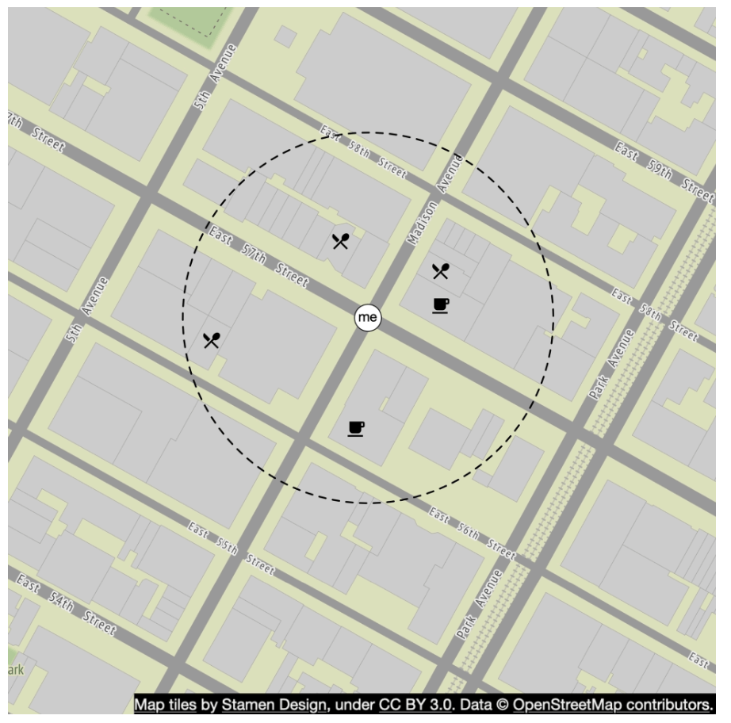
SELECT business_id, latitude, longitude
FROM business
WHERE (latitude BETWEEN {:my_lat} - radius AND {:my_lat} + radius)
AND (longitude BETWEEN {:my_long} - radius AND {:my_long} + radius);Problem: poori table scan — 200M rows pe bahut slow. Latitude aur longitude pe alag-alag index bana do to bhi:
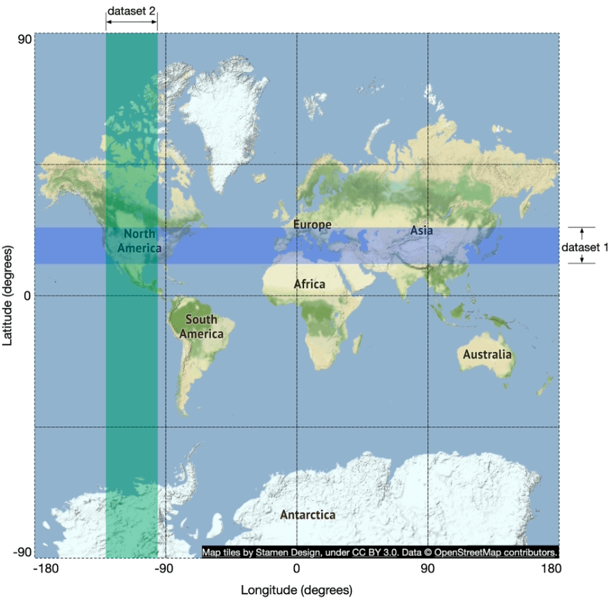
Root cause: database index sirf ek dimension mein search fast karta hai. Solution: 2D data ko 1D mein map karo — geospatial indexing.
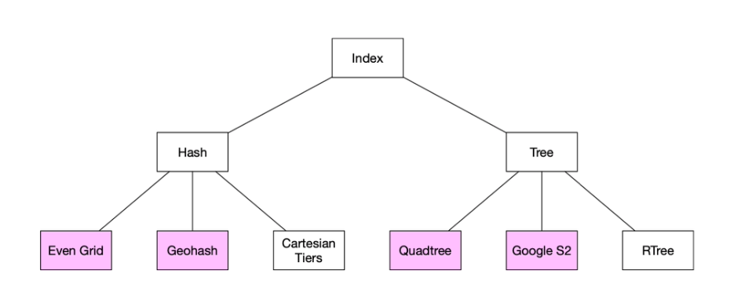
Sab approaches ka high-level idea same hai: map ko chhote areas mein divide karo aur fast search ke liye index banao.
Option 2: Evenly divided grid
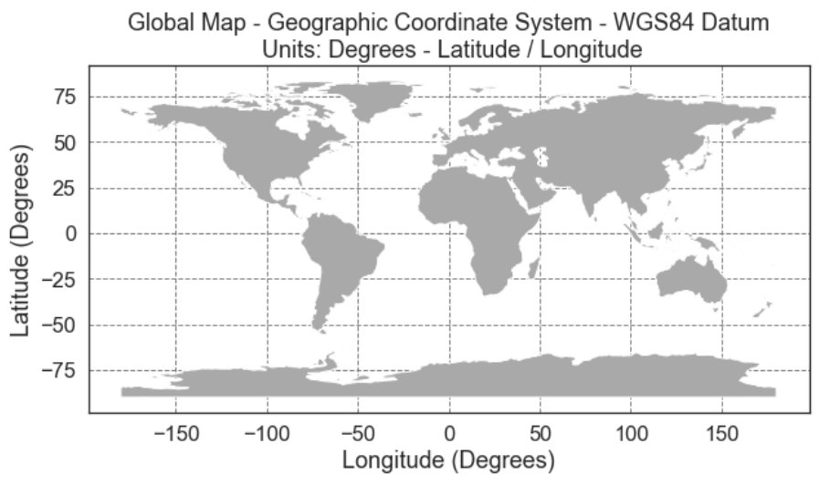
- Simple: duniya ko fixed-size grids mein baanto.
- Problem: businesses ka distribution uneven hai — New York downtown ke ek grid mein hazaron, aur desert/ocean grids khaali.
- Ideally dense areas mein grids chhote aur sparse mein bade hone chahiye.
- Ek aur challenge: kisi grid ke neighbouring grids dhoondhna bhi easy nahi.
Option 3: Geohash
Geohash even grid se better hai. Ye 2D latitude/longitude ko ek 1D string of letters and digits mein encode karta hai — har extra bit pe world ko recursively chhote grids mein todke.
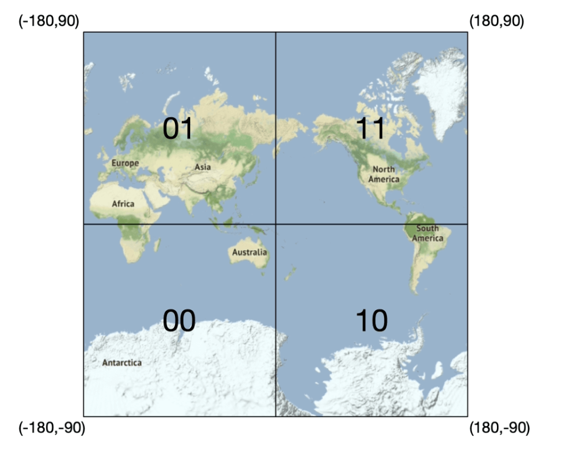
- Latitude range [-90, 0] → 0, [0, 90] → 1.
- Longitude range [-180, 0] → 0, [0, 180] → 1.
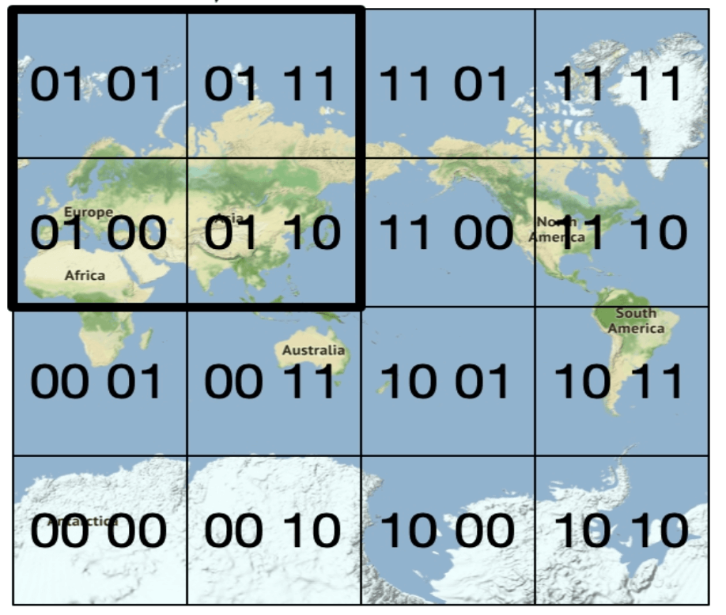
Ye subdivision repeat karte raho jab tak grid size desired precision tak na pahunch jaaye. Bits ko base32 mein represent karte hain. Example (Google HQ): 1001 10110 01001 10000 11011 11010 (base32 binary) → 9q9hvu (base32, length 6).
Geohash ke 12 precision levels hain. Precision table (movable-type page se verify kiya): length 4 ≈ 39.1km × 19.5km, length 5 ≈ 4.89km × 4.89km, length 6 ≈ 1.22km × 0.61km, length 7 ≈ 153m × 153m (cell width equator se door jaate hue kam hoti hai). Proximity search ke liye generally length 4–6 kaafi hai — 6 se lambi = grid bahut chhota, 4 se chhoti = grid bahut bada.
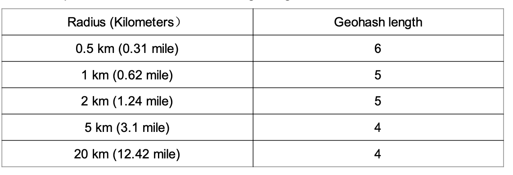
Key property: do geohashes ka shared prefix jitna lamba, wo utne kareeb. Isliye search = prefix match, jo normal DB index (B-tree) pe fast hai: SELECT business_id FROM geohash_index WHERE geohash LIKE '9q8zn%'.
Boundary issues
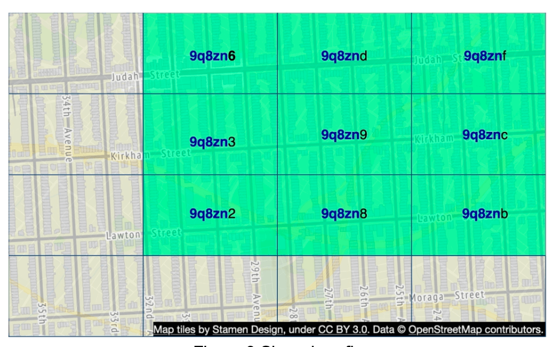
Geohash ki do edge cases:
- Bahut paas, lekin koi shared prefix nahi: do jagah equator ya prime meridian ke opposite sides pe. Jaise France mein La Roche-Chalais (geohash
u000) Pomerol (ezzz) se sirf ~30 km door hai, lekin prefix bilkul alag. Isliye simple prefixLIKEquery in businesses ko miss karegi. - Lamba shared prefix, lekin alag geohashes: user apne cell ke edge pe hai aur nazdeek ka business bagal ke cell mein.
Solution: sirf current grid nahi, uske 8 neighbours bhi fetch karo. Neighbours constant time mein calculate ho jaate hain.
Agar enough businesses nahi mile?
Option 1: sirf radius ke andar wale lautao (simple, lekin user ko kam results). Option 2: search radius badhao — geohash ka last character hatao (bada grid), phir bhi kam hain to ek aur character hatao, jab tak enough results na aa jaayein.
Option 4: Quadtree
Quadtree 2D space ko recursively chaar quadrants mein todta hai jab tak grids ka content kisi criteria pe na pahunche — jaise "kisi grid mein 100 se zyada businesses nahi". Har internal node ke exactly 4 children. Important: quadtree in-memory data structure hai, database solution nahi — har LBS server pe chalta hai aur server startup pe build hota hai.
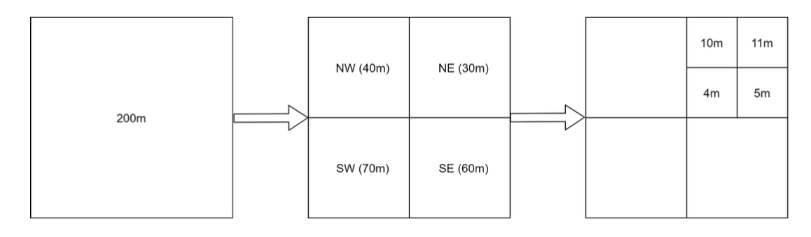
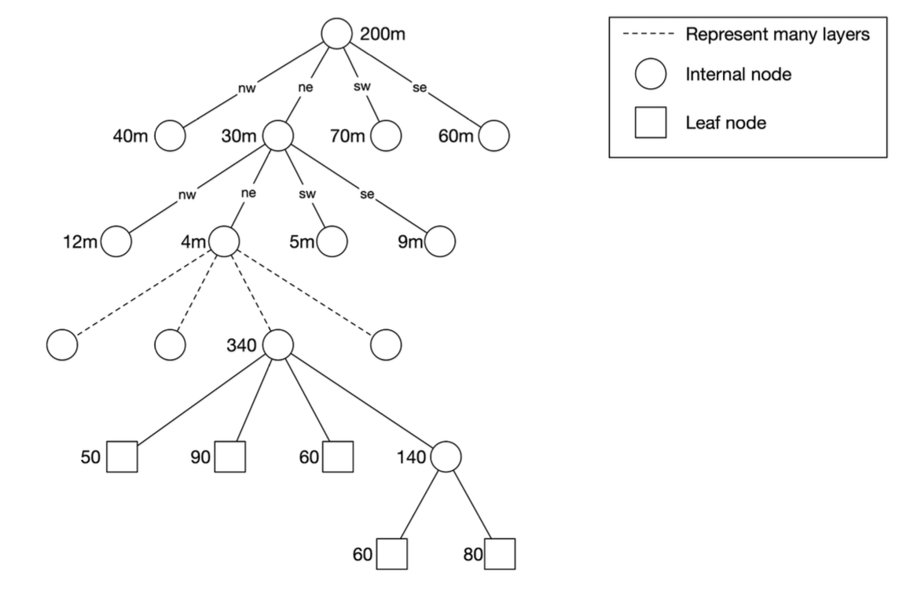
Quadtree kitni memory lega?
- Leaf node mein max 100 business IDs. 200M / 100 ≈ ~2M leaf nodes; internal nodes ≈ leaves ka ~1/3.
- Har leaf ~100 IDs × 8 bytes ≈ ~800 bytes + coordinates → total kuch GB (notes: "typically in GBs") — ek server ki memory mein fit.
- Isliye quadtree ko multiple servers pe shard karne ki zaroorat nahi; read load ke liye bas zyada servers/replicas lagao.
Build time aur search
- Build complexity O(n log n) — 200M businesses ke liye kuch minutes.
- Search: root se traverse karke us leaf tak jahan search origin hai; us leaf mein 100 businesses hain to return, warna neighbours add karte raho jab tak enough na mil jaaye.
- k-nearest queries ke liye natural fit (e.g. "sabse nazdeek 5 gas stations, chahe kitni bhi door hon").
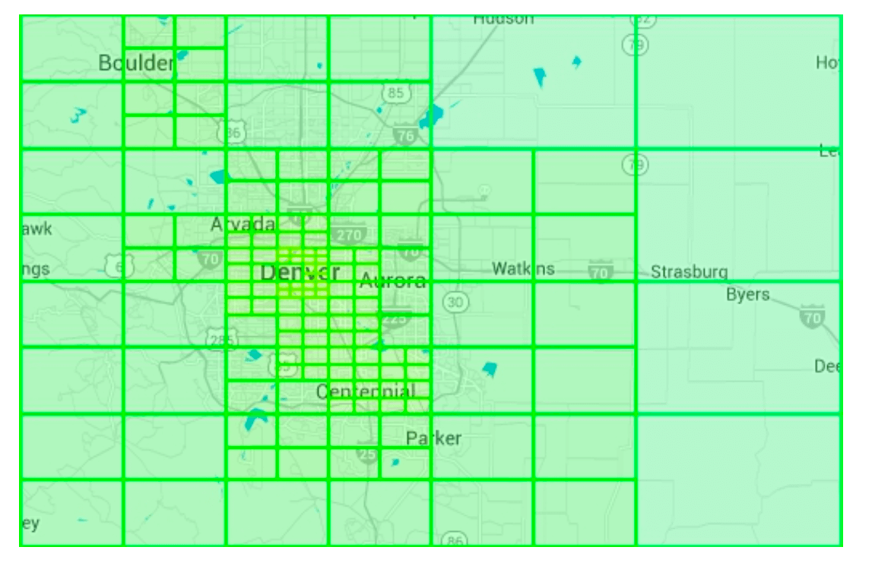
Operational considerations
- Startup pe build mein kuch minutes — us dauran server traffic serve nahi kar sakta. Isliye naya release incrementally servers ke subset pe roll out karo (blue/green deploy bhi option hai, lekin saare naye servers ek saath DB se 200M businesses load karein to DB pe load spike).
- Business add/update: sabse aasaan — quadtree ko incrementally rebuild karo (raat ko nightly job), lekin isse bahut saari cache invalidation hoti hai.
- On-the-fly update bhi possible hai, lekin complex — multiple threads ek saath tree access karte hain to locking mechanism chahiye.
Option 5: Google S2
Google S2 geometry library bhi popular hai. Ye sphere ko Hilbert curve (space-filling curve) ke basis pe 1D index mein map karti hai. Hilbert curve ki important property: curve pe kareeb do points 1D space mein bhi kareeb hote hain. 1D space mein search 2D se kahin zyada efficient hai. S2 complex library hai — interview mein iski internals explain karna expected nahi.
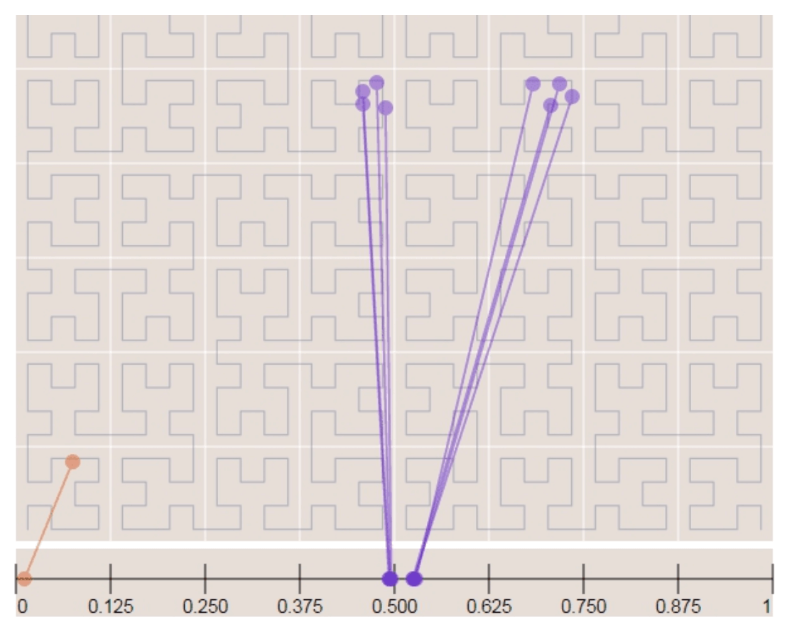
S2 ke fayde
- Geofencing ke liye great: arbitrary areas ko varying levels ke cells se cover kar sakta hai. Geofence = real-world geographic area ke around virtual perimeter. Isse apps "user is area mein enter/exit hua" detect kar sakti hain.
- Region Cover algorithm: fixed precision level ke bajaye min level, max level aur max cells specify kar sakte ho — result zyada granular, kyunki cell sizes flexible hain.
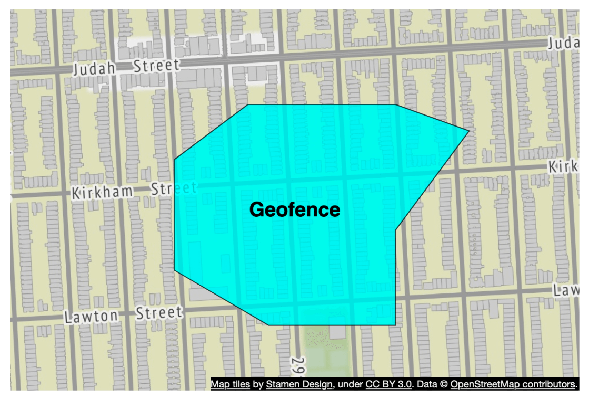
Geohash vs Quadtree vs S2
| Geohash | Quadtree | Google S2 | |
|---|---|---|---|
| Implement karna | Easy; tree build/rebuild nahi | Thoda harder | Hard (library use karo) |
| Query type | Fixed radius | k-nearest natural | Region cover, geofencing |
| Density adapt? | ❌ Fixed grid size per precision | ✅ Dynamic grid size | ✅ Flexible levels |
| Index update | Easy — ek row add/remove | Complex — rebalancing/locks, ya rebuild | Moderate |
| Real world | Bing Maps, Redis, MongoDB, Lyft | Yext | Google Maps, Tinder |
(Real-world users ki list book ke reference se hai.)
🔗 Notes ke reference URLs — kya hai inme
- Geohash Algorithm — movable-type.co.uk — interactive geohash encoder/decoder: lat/long + precision daalo to geohash milta hai (aur ulta), 8 neighbours bhi dikhata hai; length 1–12 ke cell sizes ki table aur La Roche-Chalais (u000) vs Pomerol (ezzz) wala boundary example yahin se hai.
- Quadtree — Wikipedia — quadtree ki definition (har internal node ke 4 children), types (region, point, PR quadtree), aur insert/queryRange ka pseudocode; "bucket capacity full hone pe split" wahi idea hai jo humare 100-businesses-per-leaf mein hai.
- Google S2 Geometry — s2geometry.io — Google ki open-source (Apache 2.0) S2 library ka official site: data ko flat map ki jagah 3D sphere pe represent karti hai, S2 cell hierarchy, region covering aur nearby-object queries ke developer guides.
Step 4: Database scaling aur caching
Business table scale
Data ek server mein fit na ho — business_id se shard karo. Load evenly distribute hota hai aur operationally simple hai.
Geospatial index table
Do options:
- Option 1: har geohash key ke liye ek JSON array of business IDs —
geohash → [id1, id2, …]. Update karna mushkil (array mein search karke hatana, locking). - Option 2 (recommended): har business ke liye alag row — compound key
(geohash, business_id). Add/remove simple, koi locking nahi.
| Geohash | Business ID |
|---|---|
| 9q9hvu | 343 |
| 9q9hvu | 347 |
| 9q9hvu | 112 |
Geospatial index table ko shard karna chahiye? Zaroorat nahi — ye poora ek server mein fit ho jaata hai (har row bas geohash + id), aur sharding ka koi technical reason nahi; sharding application logic complicate karta hai. Read load ke liye read replicas better.
Caching strategy
Cache add karne se pehle poochho: "kya sach mein chahiye?" Workload read-heavy hai aur dataset relatively chhota (memory mein fit), to haan, cache se latency aur DB load dono kam honge.
Sabse obvious cache key — user ka location coordinate — achha nahi kyunki:
- Phone se aaye GPS coordinates exact nahi hote — har request thoda alag.
- User move karta hai to coordinates badalte hain, lekin results zyada tar same.
Better key = geohash (ya quadtree node): chhota location change same geohash mein map ho jaata hai.
| Cache key | Cache value |
|---|---|
geohash | Us grid ke business IDs ki list |
business_id | Business object (name, address, reviews…) |
Har precision (4, 5, 6) ke liye alag cache keys rakh sakte ho, taaki alag radius ki queries serve ho sakein. Memory rough: 200M businesses × 3 precisions × ~8 bytes per ID ≈ kuch GB — modern Redis server mein fit, lekin availability aur cross-continent latency ke liye Redis cluster globally deploy karo.
Step 5: Region, availability zones aur final design
- LBS ko multiple regions aur availability zones mein deploy karo — users physically paas ke server se, traffic evenly spread, aur privacy laws (kuch countries data locally rakhne ko kehti hain) ke liye region-wise data.
- Business updates daily batch (nightly job) mein process — real-time ki requirement nahi.
- Extra filters (e.g. "sirf abhi khule restaurants", "sirf restaurants") — geohash/quadtree se business IDs nikalne ke baad chhoti list pe filter apply karna cheap hai.
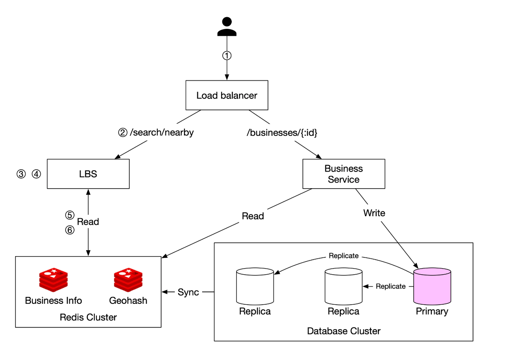
/search/nearby → LBS; ③④ LBS geohash length calculate karta hai aur neighbours nikalta hai; ⑤⑥ Read — LBS Redis Cluster ke Geohash cache se business IDs aur Business Info cache se details padhta hai. Right side: /businesses/{:id} → Business Service jo Redis se Read aur Database Cluster ke pink Primary pe Write karta hai; Primary Replicas ko replicate karta hai, aur DB cluster Redis ko Sync karta hai.Nearby search ke steps (end-to-end)
- User 500m ke andar restaurants dhoondhta hai — client latitude 37.776720, longitude -122.416730, radius 500m load balancer ko bhejta hai.
- LB request LBS ko forward karta hai.
- LBS radius ke hisaab se geohash length nikalta hai — table se 500m → length 6.
- LBS current geohash + 8 neighbours calculate karta hai:
[my_geohash, neighbor1_geohash, …, neighbor8_geohash]. - Har geohash ke liye Geohash Redis se business IDs — parallel calls se latency kam.
- Business IDs se Business Info Redis se full details, user se distance calculate, rank karke client ko.
Business owner ka view/update flow
Business info API: pehle cache (business_id key) check, miss pe DB se laake cache. Owner update karta hai → primary DB; nightly job cache/index refresh karta hai — next day effect.
Interview mein kaise bolein
- (5 min) Scope: search by lat/long + radius, business CRUD (non real-time), detail view; latency, privacy (GDPR/CCPA), HA. Math: 100M DAU × 5 → ~5,000 QPS; 200M businesses.
- (7 min) APIs + data model + HLD: LB → LBS (stateless, read-only) / Business service; primary-replica DB, lag acceptable.
- (18 min) Algorithms: naive 2D SQL aur kyun slow (1D index) → even grid → geohash (bits, base32, precision table, boundary + 8 neighbours) → quadtree (100 per leaf, memory, build time, rolling deploy) → S2 (Hilbert, geofencing). Comparison table.
- (10 min) Scaling: business table shard by id, geo index = (geohash, business_id) rows + read replicas, cache key = geohash not lat/long, Redis cluster, multi-region.
- (5 min) Final flow walk-through: 500m → length 6 → 9 cells → parallel Redis → rank by distance.
Common follow-up questions
Q: Geohash ya quadtree — kaunsa choose karoge?
A: Fixed-radius search + easy updates → geohash (Redis ke saath simple). k-nearest aur density-adaptive grids chahiye → quadtree. Dono valid; trade-off clearly bolo.
Q: Radius 500m hai lekin us area mein sirf 2 restaurants hain?
A: Geohash ka last char hata ke grid bada karo (radius expand) jab tak enough results na milein — ya user ko kam results dikhao.
Q: Do jagah 100m door hain lekin geohash prefix alag kyun?
A: Boundary issue (equator/meridian ya cell edge). Isliye 8 neighbours query karte hain.
Q: Quadtree server restart pe minutes leta hai — production mein kaise?
A: Rolling deploy, readiness check, aur ho sake to tree ko snapshot se load karna; saare servers ek saath kabhi restart nahi.
Q: Business owner ne naya restaurant add kiya — kab dikhega?
A: Requirement ke hisaab se next day — nightly batch geo index aur cache update karta hai.
Q: Cache key lat/long kyun nahi?
A: GPS imprecise hai aur user move karta hai — hit rate almost zero hoga. Geohash nearby coordinates ko ek key mein group karta hai.
Key Takeaways
- ~5,000 search QPS, 200M businesses, read-heavy + writes non-real-time → read replicas, caching, stateless LBS.
- Naive 2D SQL slow hai kyunki DB index ek dimension mein hi help karta hai; geospatial index 2D → 1D map karta hai.
- Geohash: recursive quadrant split, base32 string, shared prefix = proximity; radius → precision (500m → 6, 1–2km → 5, 5–20km → 4); boundary issue ke liye 8 neighbours.
- Quadtree: in-memory, ≤100 businesses per leaf, kuch GB mein fit, O(n log n) build (minutes) → rolling deploys; k-nearest ke liye best.
- Google S2: Hilbert curve, geofencing aur flexible region cover.
- Geo index rows = (geohash, business_id); shard business table by id, geo index ko replicas se scale.
- Cache key = geohash (not raw lat/long); Redis mein geohash→IDs aur business_id→object; multi-region deploy.